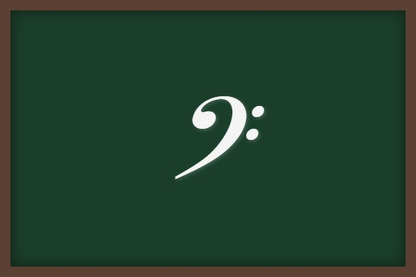
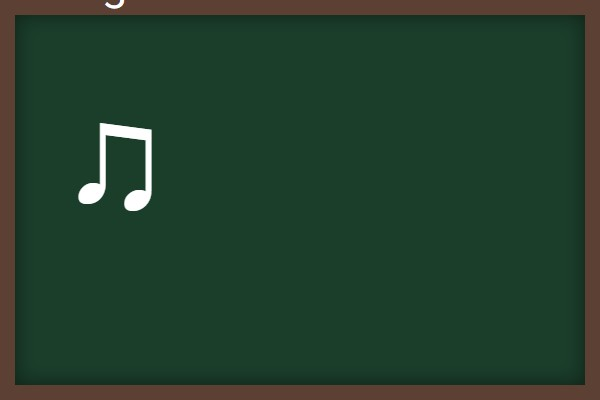
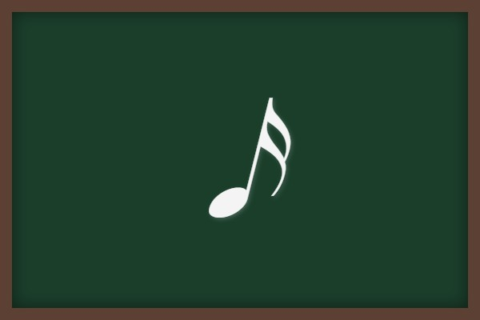
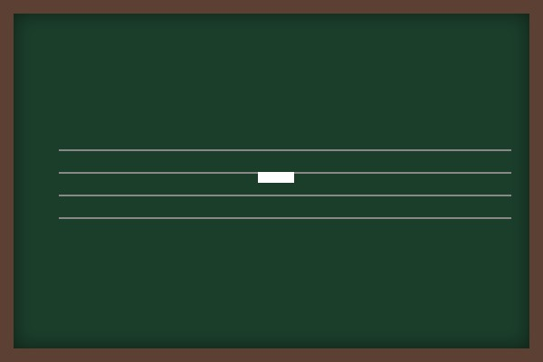

歌唱曲③ (君をのせて・明日を向いて・生命が羽ばたくとき)
スタジオジブリの名作映画でおなじみの「君をのせて」と、合唱で親しまれる「明日を向いて」「生命が羽ばたくとき」の3曲を特集します。それぞれの基本情報はもちろん、テストに出るさまざまな音符や休符、楽譜の進行記号を整理しました！
1. 「君をのせて」の要点整理
映画「天空の城ラピュタ」のエンディングテーマとしてあまりにも有名な楽曲です。
① 基本データ
- 作詞：宮崎駿（みやざきはやお）（映画監督）
- 作曲：久石譲（ひさいしじょう）（ジブリ作品の音楽を数多く手がける日本を代表する作曲家）
- 拍子：4分の4拍子
- 調：ホ短調（ほたんちょう）（シャープ「♯」がファの音に1つつく短調。平行調はト長調）
作詞：宮崎駿
作曲：久石譲
② 重要な音楽用語・記号
- 副旋律（オブリガート） ➔ 主旋律を活かすために寄りそう旋律のこと。
- ヘ音記号（へおんきごう） ➔ 混声三部合唱において、主に男声パートの楽譜で用いられます。

ヘ音記号：低い音域を表す記号
- 3連符（さんれんぷ） ➔ ある音符の長さを均等に3等分した音符。

3連符：この場合は8分音符3つが1拍（4分音符1つ分）に相当
- cresc.（クレシェンド） ➔ だんだん強く（大きく）（記号「＜」と同じ意味）
- legato（レガート） ➔ 音と音の間に切れ目を感じさせず、滑らかに歌うこと。
標語「legato」の楽譜指示例
2. 「明日を向いて」の要点整理
① 基本データ
- 作詞：新沢としひこ（しんざわとしひこ）
- 作曲：アベタカヒロ
- 拍子：4分の4拍子
- 調：ニ長調（にちょうじょう）（シャープ「♯」がファとドの音に2つつく調）
② テストに出る休符と進行記号
4分休符（よんぶきゅうふ）
意味：1拍休む

8分休符（はちぶきゅうふ）
意味：半拍（0.5拍）休む

音符の切れ目に描かれるブレス記号（∨）：意味は「息を吸う」
3. 「生命が羽ばたくとき」の要点整理
① 基本データ
- 作詞：人見敬子（ひとみけいこ）
- 作曲：西澤健治（にしざわけんじ）
- 拍子：4分の4拍子
- 調：ヘ長調（へちょうじょう）（フラット「♭」が1つつく調）
② 重要な楽典（音符・休符・進行記号）

16分音符
4分音符の「4分の1」の長さ（0.25拍）

全休符（ぜんきゅうふ）
第4線からぶら下がる形。
意味：1小節全体を休む（または4分休符4つ分休む）

反復記号 D.S. (ダル・セーニョ)：意味は「セーニョ記号（𝄲）に戻る」
🔥 定期テスト対策・暗記のコツ
① オブリガートと言葉の意味
「主旋律に寄り添って、主旋律を引き立てるように演奏される旋律」を何というか、という記述問題がよく出ます。「副旋律」または「オブリガート」という言葉を確実に書けるようにしておきましょう！
② D.S.とD.C.の違い
・D.S. (ダル・セーニョ) ➔ 「セーニョ記号に戻る」
・D.C. (ダ・カーポ) ➔ 「最初に戻る」
テストではこの2つの区別が頻出です。セーニョ記号の形も併せて覚えておきましょう。
③ 映画「天空の城ラピュタ」の調
「君をのせて」の調は「ホ短調」です。シャープが1つ（ファに）つきます。平行調である「ト長調」と間違えやすいため、マイナー（短調）であることを意識して覚えましょう！